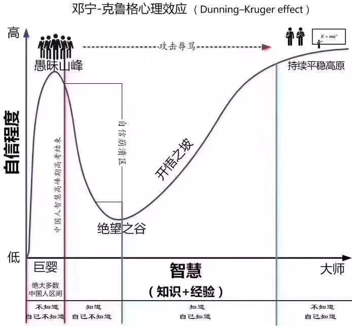

自信崩溃与绝望之谷
有很长一段时间没写东西了_(:з」∠)_，甚至还删了不少之前内容。现在看来，原因其实很简单，我开始意识到很多之前写的东西仅仅只是建立在我自己的无知之上。
具体到时间线，流程大概分为失控 => 崩溃 => 接受这么个流程，恰巧最近又了解到了达克效应，感觉套用在我这段时间还挺合适的，就顺手给从学校到毕业这几年做下总结好了……
大学几年大概就是个人自信巅峰的起点了。从小就是个综合成绩极差的极端偏科生，而且爱好常变，对什么感兴趣了，对应的科目成绩就会爆棚。失去了应试教育的束缚，可以说如鱼得水，乐队、动画、摄影、设计、绘画、编程，一天到晚瞎搞事。而且大抵是由于起点低，基本搞什么都还算能小有收获，毕竟只是从0到1而已，太简单了。于是自信心极大地开始膨胀，踏入了打滚撒泼的巨婴阶段。
当然某些事情是需要强大的自信去推动的，至少我现在看我当年做的的某些东西时，能明显的感受到现在已经失去了、抓不住的东西。但是巨婴行为也是事实。在极大的自由和充裕的时间下积累起来的点滴成就感，终于汇聚成了一条巨大的野心。怀揣着改变世界的幻想，踏入了工作岗位。
怀揣着一颗猎人的心，踏入了丛林。又感谢当年boss的知遇，给了我向前探索的机会。虽然依旧比较粗糙，但也算是做出了一些成果。如同学校一样，没有强制的打卡，极大的自由度。在一次次的项目推进中，确确实实的感受到个人对客观世界的操控力。那么，只要将这份力量继续放大，改变世界大概也不是问题吧……
后来我离职了，另一家初创公司开出了更优厚的薪资，并许诺整个前端的小组。离职当天流着泪和同事做了告别，虽然不舍，但是我想要更大的力量。我也认为我能够掌控更大的力量……
两个月之后，我从第二家公司离职。直系上级提出涨薪50%的条件，依旧拒绝。
当时依旧没感受到所谓的碰壁，而是一味的觉得上级不懂技术，一味的赶工返工，毫无章法，效率低下。现回过头看，雪崩下有哪片雪花无辜？又该由哪片雪花负责？我其实从未抵抗过上级不合理的意见，只是任性的感到不满就离开了。
虽然从结果上说，离开确实是个正确的选择。这家公司积垢已深，运作畸形。但是从流程上不能否认我犯下的错，我很惭愧我在这家公司没有真正的为了更高的目标奋斗过，只是一味的完成任务，不爽了就选择离开……
离职后，正逢母亲生病，便回老家休息了一段时间，然后受到了现公司前领导邀约入职。
之前的奔驰就像是小场地上开着卡丁车，油门全开，极限飞驰，冲过一个又一个得分点。当正式踏入这条大赛道，坐进真正的赛车时，激动万分。这是就是我梦寐以求的场地，我愿成为这条赛道上最闪亮的彗星。
然而，巴音布鲁克没有海……
卡丁车最高60km/s的时速简直就是小孩子的玩具。在这里我见到了一个个车手，有的稳如山，有的徐如林，有的烈似火。他们都在这条路上与各种危险战斗。既要夺得魁首，也得保证自己不会冲出赛道跌下悬崖。在这里傻快是最危险的，轮胎、路面、风向、温度、油压。当结结实实的摔了下去后，我终于明白了。其实我一无所知……
